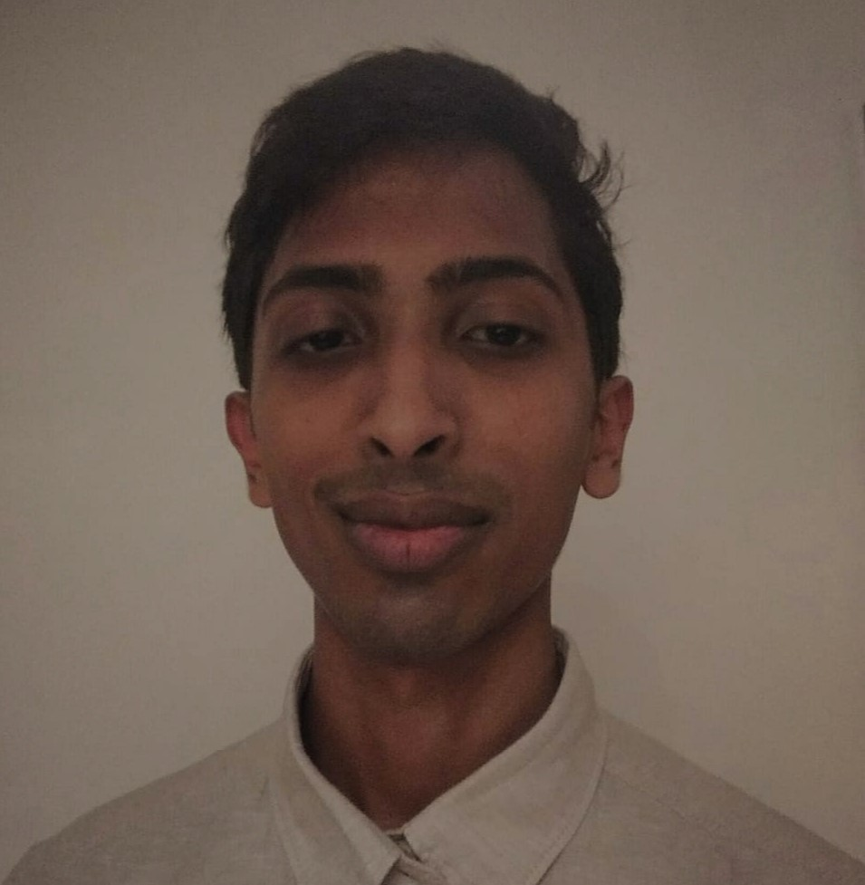

Viruj Balasoupramanien
Software developer & Mechanical engineer.
I solve both real and virtual world problems.
üìß virujbala.96@gmail.com
Tech stack
Python, JavaScript, C#, Unix Scripting, Java
.NET, NodeJS, Springboot
React, Svelte, Vue, Angular
SQL Server, Postgres, MySQL
AWS, Docker
Arduino, Solidworjs, ANSYS, Simulink
Work History
Application Development Associate | Accenture
04/2021 - Present
Maintain and develop evolutions for a number of client web and mobile applications
- Fully autonomous on one of the web applications within 2 months of joining
- Delivering weekly patches to the client
- Formed new team members on the certain applications
- Set up custom local development environment for the team using docker and Unix scripting
Hosted an IoT workshop at the University of Mauritius
Participated at Accenture eco-innovation challenge, presented Master's thesis to global Accenture
Project Coordinator | Water Research (Taylor Smith Group)
02/2020 - 09/2020
Oversaw several different projects for the company and group
- Kick-started international operations in neighbouring island Reunion
- Was tasked with digitizing daily workflow. I created an Excel application using VBA and macros
to facilitate foreman procedures and reduce the wait-time for engineers to receive reports
- Conducted geotechincal investigations and surveys
Mechanical Engineer Intern | Air Mauritius
12/2018 - 02/2019
Received training in several departments
- In the Air-frame and Mechanical Systems department, I was trained to track aircraft part
lifecycles, reading drawings and processing documents, and setting up maintenance tasks
- Worked in the Wheels and Brakes Workshop, maintaining and/or repairing aircraft wheels and
brakes
- Trained to perform NDT on the fleet
Engineering Intern | Hotel Istana KLCC
12/2017 - 01/2018
Routinely maintained electrical and mechanical systems in the hotel
- HVAC
- Room electrical systems - lightings, sockets, breakers
- Cooling towers
- Pumps
- Plumbing system